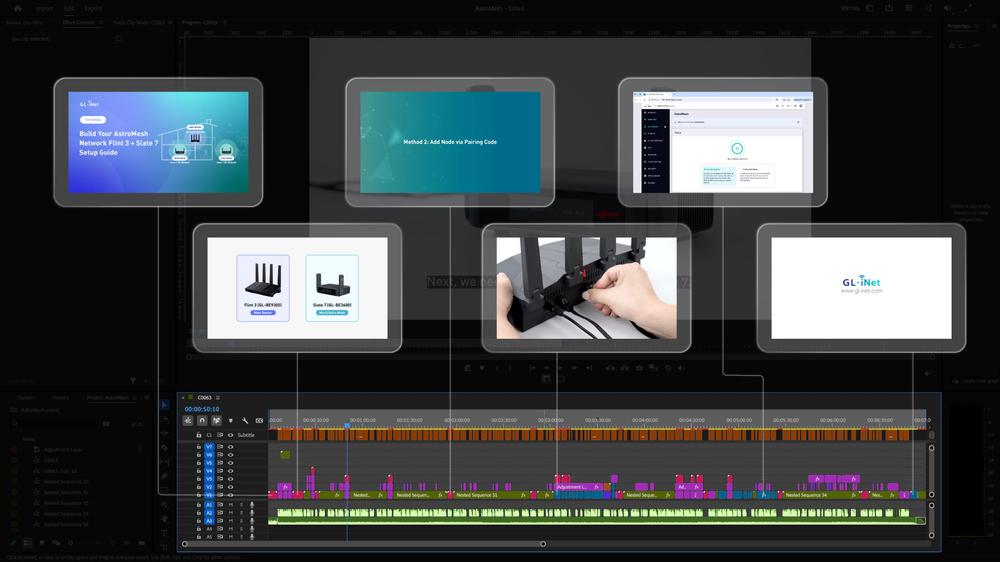

Setup Video
Educational videos combining filmed content, graphics, and motion animations to guide users through technical setups such as router configuration and VPN connection.
Overview
A growing library of setup and how-to videos for GL.iNet products — first-time configuration, factory reset, VPN server and client, WireGuard, remote KVM, and related tasks. Each piece mixes live product footage with UI capture and motion graphics so steps stay clear for first-time users.
Focus
Turn multi-step router and accessory setup into short, followable films — one task per video, paced so a first-time user can pause and match each step on screen.
Step clarity
Power-on, admin panel, internet methods (Ethernet, repeater, tethering, cellular), and finish screens shown in order with on-screen labels.
Live + motion
Product hands-on and UI capture for real actions; motion graphics for abstract steps (VPN tunnels, multi-WAN, failover).
Product coverage
Dedicated first-time setup for travel routers, gateways, and remote KVM (e.g. Mudi 7, Brume 3, Comet series) plus shared how-tos.
Thumbnails & length
Theme-based covers and tight runtimes so viewers find the right guide and complete it in a few minutes.
Video types
The Setup Video playlist groups tutorials by task so support and marketing can point users to a single, specific film.
First-time setup
Power, Wi‑Fi, admin password, and internet methods for models such as Mudi 7, Brume 3, Comet Q, and Comet 5G.
VPN server & client
WireGuard / OpenVPN on the router, and paired setups (e.g. Brume 3 as server + Beryl 7 as client) for travel security.
Factory reset
Step-by-step restore for devices like Mudi 7 when recovery or a clean install is needed.
Remote KVM & accessories
First-time setup for Comet series (USB-C remote control, 5G models) and related pairing flows.
Approach
Each video is planned around a single outcome: “device is online,” “VPN is connected,” or “router is reset.” Script and shot list stay short; graphics fill gaps where the UI is dense or the idea is abstract.
Plan
- One task per film
- Shot list + UI path
- Subtitle key steps
Shoot
- Product & ports
- Admin panel capture
- Hands-on actions
Edit
- Pacing for pause-and-do
- Motion for abstract steps
- Thumbnail + title
Production
Filming prioritizes clear product identity and readable UI. Motion in After Effects supports concepts such as dual-SIM failover, multi-WAN, and VPN tunnels without long voiceover. Custom thumbnails keep the series consistent on the GL.iNet channel and the dedicated playlist.

Outcome
A dedicated YouTube playlist of setup and how-to films — first-time configuration, VPN, reset, and accessory guides — so users can follow one clear path from unbox to online.